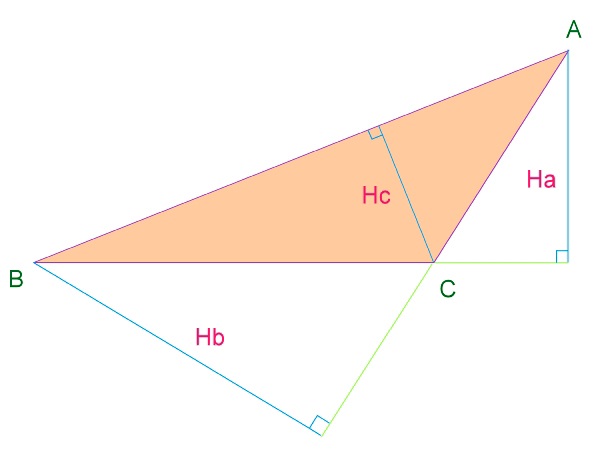

Problem 3
| Height to Area |

At first the input will be an integer n. Which denotes the number of invalid inputs after which the input will terminate. Then there will be three real numbers Ha, Hb and Hc per line.
For each input block there should be one output line. For valid inputs the line contains the area of the ABC up to 3 decimal places after the decimal point and for invalid inputs there will be a line "These are invalid inputs!". After n invalid input sets the program will terminate.
1
31.573 22.352 63.448
46.300 50.868 86.683
22.005 24.725
22.914
5.710 25.635 32.805
1517.456
2219.941
311.804
These are invalid inputs!
Triangle is a very fine geometrical shape,
you can't say this is bad;
But if you familiar with "Triangle Love",
you must know that will make you sad.
--- Moni.